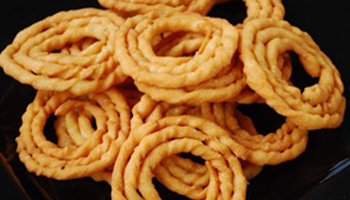
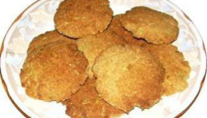

Besan methi frankie
Besan Methi frankie is a delicious deep fried Indian bread.These frankie's not only taste awesome hot but they taste wonderful when they are cold.

green peas kabab
Scrumptious kebabs made with green peas, cashew nuts, chickpea flour and a variety of spices. They taste awesome.

Kai Murukku
Kai Murukku Recipe is a traditional South Indian Snack that is made from rice flour and flavored with butter, cumin and asafoetida.

Moong Sprouts
moong sprouts is a very easy as well as a very healthy salad recipe. this salad made from moong sprouts is specially good for people who does not have much time for cooking or who does not know much about cooking .

Saffron Yogurt Loaf
The saffron is used in a frozen yogurt filling that is bursting with flavor but still tastes very light. And the whole shebang is topped with ripe figs that are drizzled with honey.


Soya Beans Paniyaram
Soya Beans Paniyaram is a delicious and healthy snack made from soy granules and a can of mixed beans. It makes a perfect tea time snack.

Spicy Sprouts Sandwich
Spicy Sprouts Sandwich is an unusual way of making a sandwich nutritious with protein and zinc laden sprouts. This is a perfect snack.

Thekua
Thekua is a crisp, sweet cookie which is prepared with whole wheat flour. It is one of the main offerings of Chhath puja which is offered to the Sun God. Thekuas are prepared in various shapes and sizes. But they taste heavenly!

Drinks
Refreshing Drink, Cocktails, Smoothies, Drinks, Milkshakes, Non-Alcoholic Drinks available here.Get inspired with our favorite drinks

Main Course
I never cease to be amazed by how simple ingredients available in every kitchen can transform into glamorous products.Hundreds of main dish recipes.Choose from top-rated comfort food and healthy.

Desserts
Desserts usually contain sugar or a sweetening agent. Desserts contain a range of ingredients which makes the end product differ.

Ice-Creams
Making homemade ice cream is easier than you think! Give everybody something to salivate over with these yummy ice cream flavours you can make at home.